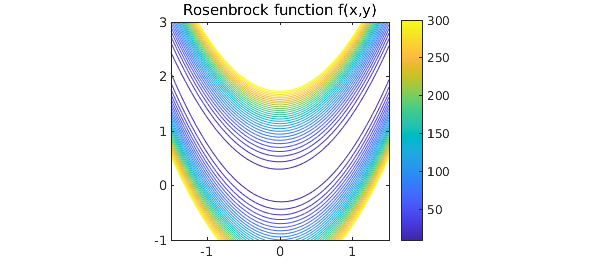
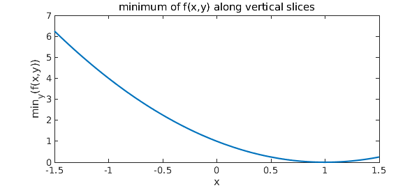
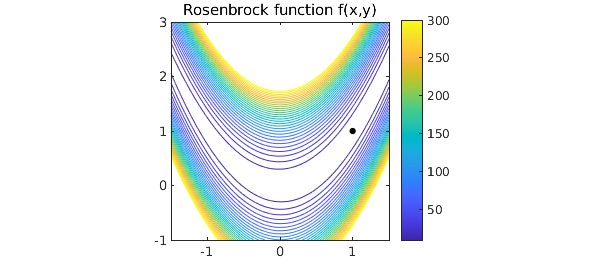
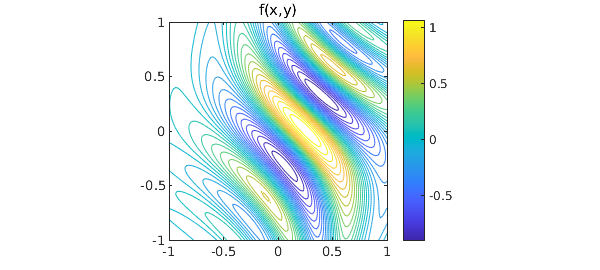
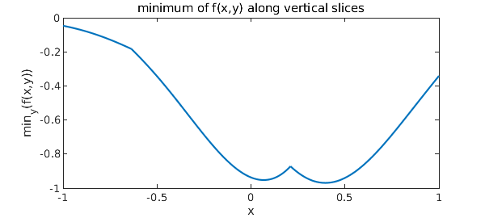
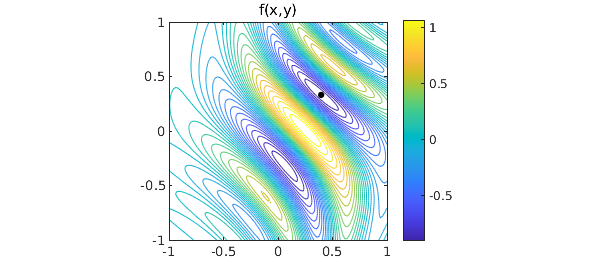

1. The Rosenbrock function
Chebfun can often do quite a good job of minimizing or maximizing a function defined on a 2D rectangle. Since the introduction of Chebfun2 in 2013, this would normally done with Chebfun2, but this example, originally written in 2010, uses 1D Chebfun to do the job. The "Rosenbrock revisited" Example treats the same problem more properly, and more efficiently, with Chebfun2 [3].
The example we consider is the famous and challenging "Rosenbrock function":
f = @(x,y) (1-x).^2 + 100*(y-x.^2).^2;
First let's plot it to get an idea:
x = linspace(-1.5,1.5); y = linspace(-1,3);
[xx,yy] = meshgrid(x,y); ff = f(xx,yy);
levels = 10:10:300;
LW = 'linewidth'; FS = 'fontsize'; MS = 'markersize';
figure, contour(x,y,ff,levels,LW,1.2), colorbar
axis([-1.5 1.5 -1 3]), axis square, hold on
title('Rosenbrock function f(x,y)',FS,14)

It's obvious from the formula that the minimum value is $0$, taken at $x=y=1$. In 1D Chebfun, we can find this by taking slices. If $x_0$ is a constant, then the minimum of $f(x_0,y)$ over all $y$ can be obtained like this:
fminx0 = @(x0) min(chebfun(@(y) f(x0,y),[-1 3]));
Now we can make a chebfun representing fminx as a function of $x$:
fminx = chebfun(fminx0,[-1.5 1.5],'vectorize','splitting','on');
figure, plot(fminx,LW,1.6)
xlabel('x',FS,14), ylabel('min_y(f(x,y))',FS,14)
title('minimum of f(x,y) along vertical slices',FS,14)

The global minimum of $f(x,y)$ is the minimum of fminx:
format long [minf,minx] = min(fminx)
minf =
2.355893258254582e-13
minx =
0.999999999999930
The variable minx represents the $x$-coordinate of the minimum. We can find the $y$ coordinate like this:
[minf,miny] = min(chebfun(@(y) f(minx,y), [-1 3]))
minf =
5.684341886080801e-14
miny =
0.999999999999859
Let's show the contour plot again, with the minimum point:
close, plot(minx,miny,'.k',MS,20)

2. A function with several local minima
Why did we put splitting on in this computation? It wasn't actually necessary in this case, but it would be necessary for more general functions $f(x,y)$ having several local extrema, because then the function fminx might not be smooth.
For example, consider this function defined on the square $[-1,1]\times[-1,1]$:
f = @(x,y) exp(x-2*x.^2-y.^2).*sin(6*(x+y+x.*y.^2));
x = linspace(-1,1); y = linspace(-1,1);
[xx,yy] = meshgrid(x,y); ff = f(xx,yy);
figure, contour(x,y,ff,30,LW,1.2), colorbar
axis([-1 1 -1 1]), axis square, hold on
title('f(x,y)',FS,14)

We define fminx0 and fminx as before. Because of the lack of smoothness and the consequent need for edge detection, this computation takes a little while:
tic
fminx0 = @(x0) min(chebfun(@(y) f(x0,y),[-1 1]));
fminx = chebfun(fminx0,[-1 1],'vectorize','splitting','on');
figure, plot(fminx,LW,1.6)
xlabel('x',FS,14), ylabel('min_y(f(x,y))',FS,14)
title('minimum of f(x,y) along vertical slices',FS,14)
toc
Elapsed time is 14.747522 seconds.

Here are the breakpoints that Chebfun has introduced:
fminx.ends
ans = Columns 1 through 3 -1.000000000000000 -0.635872022371396 0.210237104254783 Column 4 1.000000000000000
We can now quickly compute the global minimum as before:
[minf,minx] = min(fminx) [minf,miny] = min(chebfun(@(y) f(minx,y), [-1 3]))
minf = -0.969232500643147 minx = 0.395759627601423 minf = -0.969232500643148 miny = 0.331573987886853
And here's the plot:
close, plot(minx,miny,'.k',MS,20)

References
-
H. H. Rosenbrock, "An automatic method for finding the greatest or least value of a function", Computer Journal 3 (1960), 175-184.
-
S. Scheuring, Global Optimization in the Chebfun System, thesis, MSc in Mathematical Modelling and Scientific Computing, Oxford University, 2008.
-
Chebfun Example opt/Rosenbrock2